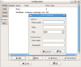
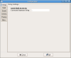
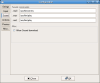
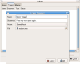
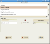

Proxy Usage

Proxy Configuration
Located in: Settings -> Global Settings -> Proxies
Proxying allows you to connect to a remote computer, and pass both input &
output through the connection. This type of connectivity is primarily used when
you are behind a strict firewall. Most firewall's will allow certain ports to
be accessed; port 80 (http), port 443 (https), and port 22 (ssh) are common
ports left untouched by firewalls.

Command Seperator
Located in: Settings -> Global Settings -> Strings
The command seperator allows you to pass multiple commands on the same line. For
example, you want to go: north, north, east, west. Instead of typing this in several
times, you can set your command seperator to: ';' and just type in: north;north;east;west
once. The seperator string you set is also used in the scripting engine of the software.

Sound Setting
Located in: Settings -> Global Settings -> Sound
Mud Sound Protocol (MSP) is supported by this client. To use this feature on Linux
or MAC, you have to set the location of your wav,mp3, and midi player. You can also
select to automatically download music based off game tags sent. For Window users,
the sound engine used by your Windows OS is the same one used in the client.
Sound Event Triggers

Sound Event Triggers
Located in: Settings -> Global Settings -> Actions -> Triggers (for global storage)
Located in: Profile -> Actions -> Triggers (for game specific storage)
You can create a triggered sound event. A trigger performs a certain action, whenever text
on the screen, matches your trigger event. In this image, you can see that a redalert.wav file
is played, whenever the statement: You can now quest again. appears on the screen.
To test out your triggers or aliases, use the Tools -> Trigger & Alias Testing , to
execute the trigger statement

Theme Engine
This software makes use of the GTK+ Theme Engine. This allows you to modify
the look and feel of your client to your specifications. Wether you need
large text output, or are looking for a sleeker option - the theme engine
will support it. For more themes, visit Gnome Look
To update themes on your Windows OS, download the theme of your choice from the above website. And extract
it into:
Installed MudMagic Directory\etc\share\themes
To update themes on MAC OS X, download the theme of your choice, from the above website. And extract
it into:
MudMagic.app/Contents/Resources/share/themes/
To update themes on Linux OS distro's, use your gnome theme engine to retrieve and update.
{kind=link}
{kind=link}
{kind=link}
{kind=link}
{kind=link}